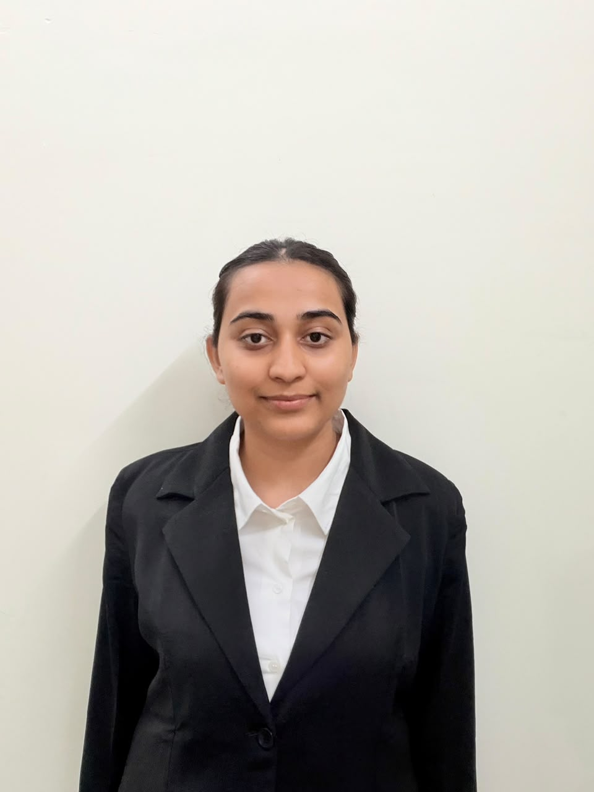

Execution at scale
Ran PMO and on-ground operations for a public-sector programme spanning 22 camps and ~2.8 lakh beneficiaries — with zero documentation errors.
MBA Candidate · IIM Visakhapatnam · Class of 2028
Structured thinking. On-ground execution. Measurable outcomes — from 2.8 lakh devices delivered across 22 public-sector camps to data-led people insights.

assets/portrait.jpg
Ran PMO and on-ground operations for a public-sector programme spanning 22 camps and ~2.8 lakh beneficiaries — with zero documentation errors.
Turned employee feedback and engagement data into targeted HR initiatives, and 70+ survey responses into well-being recommendations.
Lean Six Sigma Green Belt, BCG strategy simulation and case-interview training — hypothesis-driven, structured, MECE.
smartphones distributed in a large-scale government beneficiary programme
distribution camps coordinated across Jaipur
reduction in queue time via a check-post beneficiary flow for 300+ simultaneous arrivals
documentation accuracy maintained across the programme
in merit-based scholarships awarded by Transylvania University, USA
selected as 1 of 4 Junior Coordinators, Sunrise Investment Club
A state-run programme needed to put ~2.8 lakh smartphones into beneficiaries’ hands across 22 high-footfall camps in Jaipur — on schedule, and fully documented.
Engagement programmes were running without a clear read on what employees actually needed, and reporting was hard to trust and slow to retrieve.
More accurate reporting, faster information retrieval, data-driven tracking of engagement outcomes — and higher overall participation.
Stress management practices of business people and the impact on overall happiness.
Financial modelling · Data analysis · Survey design
Project charter · Minitab · Process mapping · Root-cause analysis · Capstone
Guesstimates · Market entry · Growth frameworks · Case structuring
Process mapping · Stakeholder management
E-commerce · Product · Marketing · Order processing
Team sport taught me what consulting rewards: clear roles, fast feedback and playing for the scoreboard, not the highlight reel.
Currently open to Summer Internship 2027 opportunities